Data link layer
实验内容概览¶
1.以太网链路层帧格式分析¶
实验环境搭建¶
- 组网
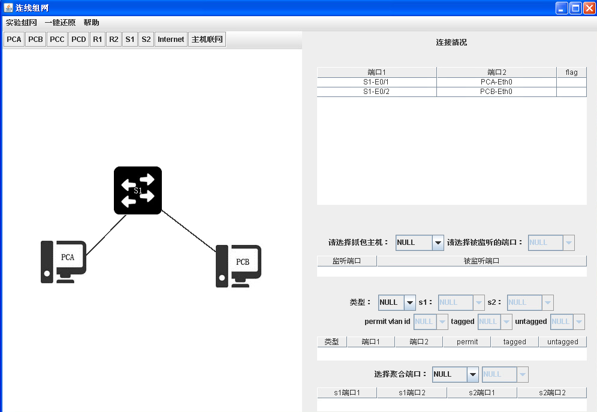
- 配置IP地址
- PCA：IP地址192.168.1.22，子网掩码255.255.255.0
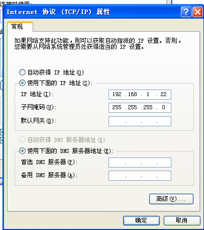
- PCB：IP地址192.168.1.21，子网掩码255.255.255.0
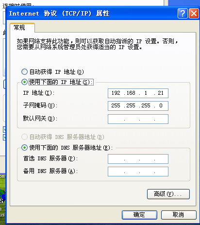
- 清空交换机配置
- 可以正常进入系统视图说明交换机正常工作
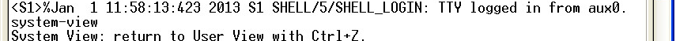
- 该部分实验不需要什么特殊的交换机配置，直接开始实验即可
- 手动开启NWLink，使实验时能够抓到基于IEEE 802.3的报文
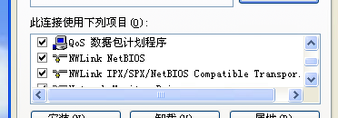
实验过程¶
- 在PCA和PCB上都启动 Wireshark 捕获报文,然后PCA进入 Windows 命令行窗口,执行如下命令ping 192.168.1.21。命令执行完毕后,终止截获报文,将截获报文保存为“ping-学号”,并上传到FTP服务器
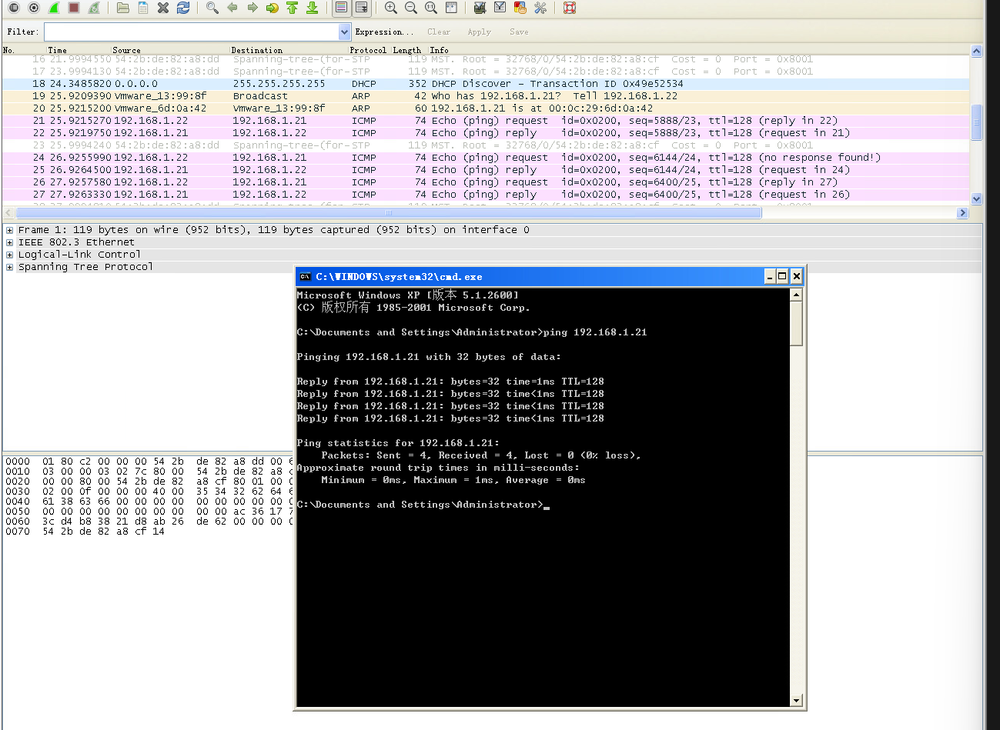
- 导出截获的报文
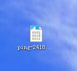
- 对截获的报文进行分析。
- 请列出截获报文的协议种类,各属于哪种网络协议?
- ARP协议：属于网络层，用于将IP地址解析为MAC地址，从而能够在数据链路层通信
- ICMP协议：属于网络层，本次实验中ICMP报文包括Echo Request（ping请求）和Echo Reply（ping响应），用于测试网络连通性和测量往返时间。
- DHCP协议：属于应用层，用于获取IP地址。计算机启动时，如果设置为自动获取IP，会发送DHCP Discover广播，用来寻找网络中的DHCP服务器，请求分配IP地址
- 但是我已经手动设置了固定IP所有这个包肯定不是PCA发送的
- 查看数据包中的详细信息验证
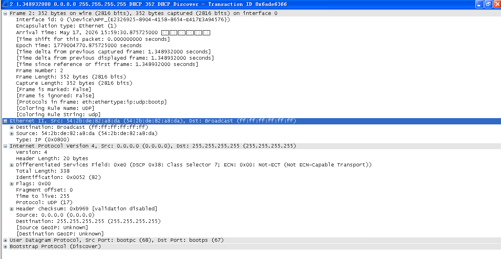
发送方的MAC地址和PCA的MAC地址不同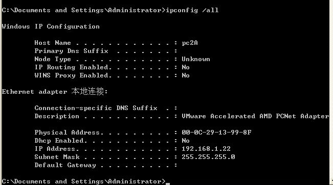
证明不是PCA发送的
- STP协议：属于数据链路层，用于防止网络环路，交换机启动后默认开启STP协议
- 查找并分析一个基于IEEE 802.3的报文,体会 IEEE 802.3 MAC帧的结构。
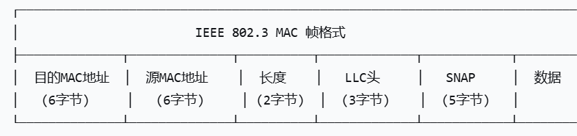
- 该STP报文基于IEEE 802.3
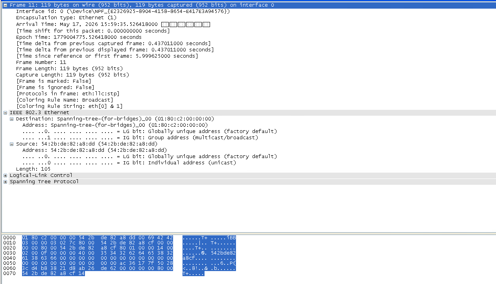
- 前6字节为目的MAC地址
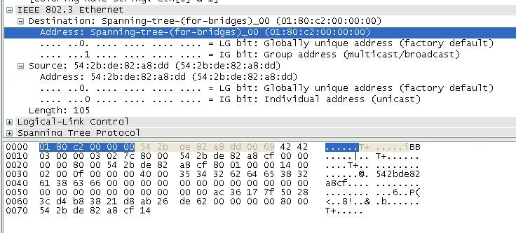
- 紧接着6字节为源MAC地址
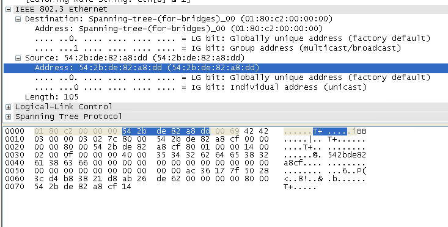
- 接着2字节为长度
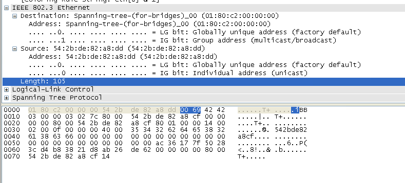
0x0069 = 105（十进制）小于1500也可以证明这是基于IEEE 802.3的报文。0x0069 = 105表示后面LLC头+数据的长度是105字节 - 在接着3字节是LLC头部
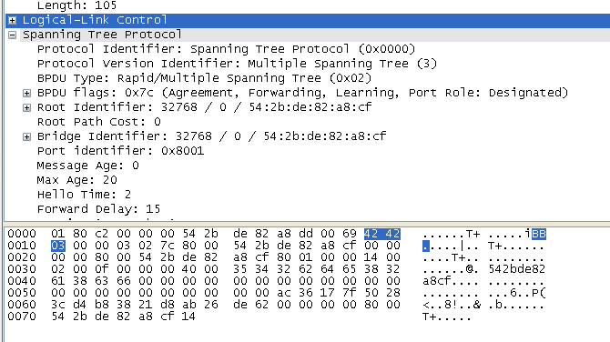
该头部用于告知接收方数据应该交给哪个上传协议（Ethernet II帧用2字节的"类型"字段直接告诉上层）- DSAP：目的服务访问点，告诉接收方这个帧的数据应该交给本机的哪个上层协议，DSAP=0x42说明是STP协议使用的服务访问点
- SSAP：源服务访问点，告诉接收方这个帧的数据来自发送方的哪个上层协议，SSAP=0x42说明是STP协议使用的服务访问点
- 为什么需要 SSAP？接收方可能需要向发送方回复，知道来源协议，可以正确地将回复路由回去。在某些协议中，DSAP 和 SSAP 可以不同（表示不同协议之间的通信）
- Control：控制字段，标识 LLC 帧的类型，以及是否使用编号、流量控制等，Control = 0x03，表示这是 UI 帧，不编号、不确认、不用流量控制。这是最简单、最常见的 LLC 帧类型
- 剩余字节为STP数据部分
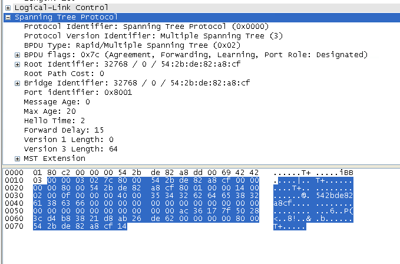
- 前6字节为目的MAC地址
- 查找并分析一个基于Ethernet V2 标准规定的报文
- 目的MAC地址
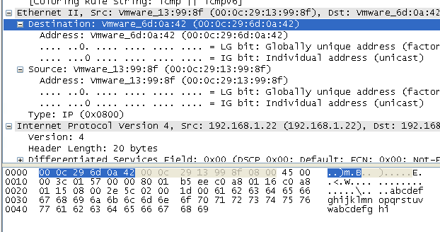
- 源MAC地址
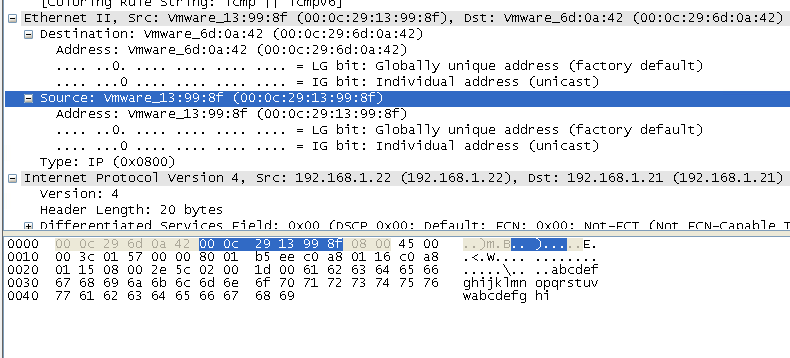
- 上层协议类型，0080大于0060（1536）因此该字段表示协议类型，0800表示上层协议为IP协议
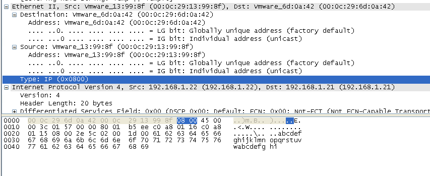
- ip头部
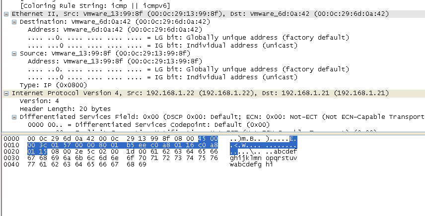
- icmp+数据
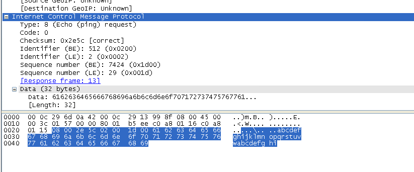
- 目的MAC地址
- 在网络课程学习中,IEEE 802.3 和 Ethernet V2 规定了以太网 MAC层的报文格式分为7字节的前导符、1字节的起始符6字节的目的MAC地址、6字节的源 MAC地址、2字节的类型、数据字段和4字节的数据校验字段。对于选中的报文,缺少哪些字段?为什么?
- 根据上面对报文的详细分析发现缺少7字节的前导符、1字节的起始符、4字节的数据校验字段（FCS）
- 原因
- 看不到前导符和起始符是因为：前导符和起始符是物理层用于比特同步和帧界定的，不是数据链路层的内容。网卡硬件在接收帧后，会自动去掉这两个字段，只把MAC帧交给上层软件抓包软件（如Wireshark），工作在数据链路层或更高层，根本看不到物理层的信息
- 看不到数据校验字段（FCS）是因为：网卡硬件校验后剥离。网卡收到帧后，会用CRC32算法计算并验证FCS，如果校验通过：去掉FCS，将帧交给上层（证明帧没有错误），如果校验失败：直接丢弃该帧（不会交给上层）。因此，Wireshark看到的都是已经通过校验的好帧，FCS已经被移除
实验总结¶
通过实验,对 Ethernet V2 标准规定的MAC层报文结构进行了详细分析,初步了解 TCP/IP协议簇中的主要协议及其层次结构,验证了IEEE 802.3 标准规定的MAC层报文结构
2.交换机的MAC地址表和端口聚合¶
实验环境搭建¶
- IP地址设置
- PCA
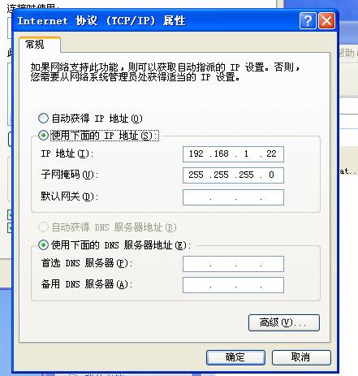
- PCB
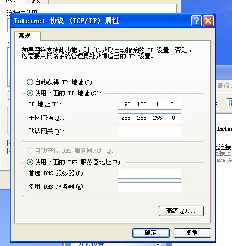
实验过程¶
2.1MAC地址表实验¶
- 该部分实验的网络拓扑和实验1一样
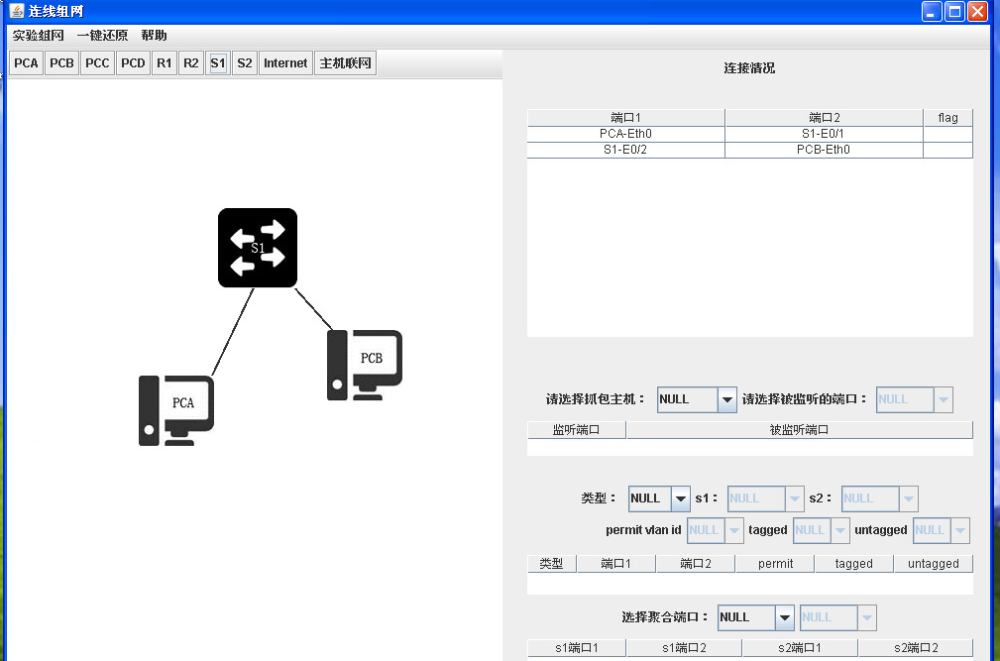
- 在计算机 PCA上执行 ping 192.168.1.21命令
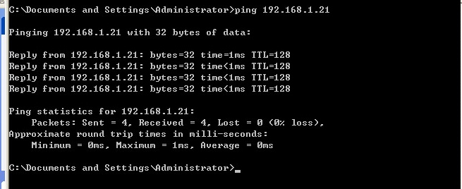
- 然后查看交换机MAC地址表
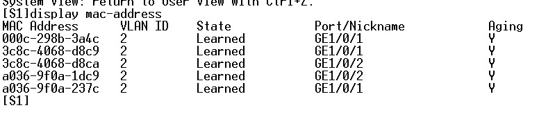
- 解释MAC地址表中各字段的含义？
- MAC Address：交换机学习到的物理地址
- VLAN ID：该MAC地址所属的VLAN编号。交换机将MAC地址与VLAN关联，实现不同VLAN之间的隔离。
- State：MAC地址表项的状态。Learned表示交换机动态学习到的条目，Static表示管理员静态配置的条目，Blackhole表示被丢弃的条目。
- Port/Nickname：该MAC连接的交换机端口。交换机根据此字段决定向哪个端口转发数据帧。
- Aging：老化时间（单位：秒）。动态学习到的MAC地址会开始倒计时，如果在计时归零前没有再次收到该源MAC地址的帧，该条目将被删除。默认老化时间为300秒。
- 清空交换机的MAC地址表
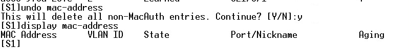
- 再次查看MAC地址表发现又有新条目，但根据PCA和PCB的MAC地址，这两个条目既不是PCA的也不是PCB的，这是交换机自身的不同端口对应的不同MAC地址
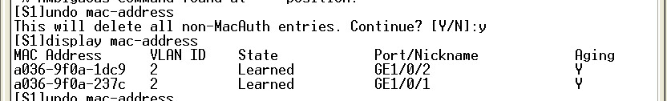
- 再次清理发现清理干净了
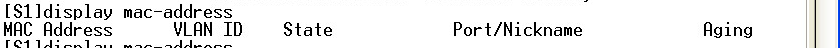
- 在PCA中pingPCB
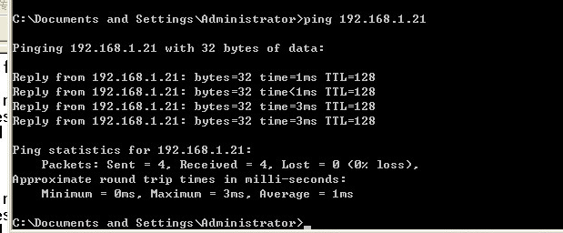
- 再次查看MAC地址表
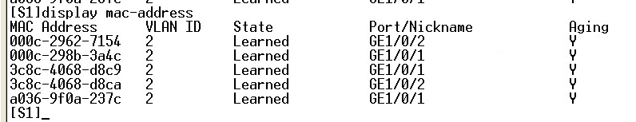
- 这个实验能够说明MAC地址表的学习是来源于数据帧的源MAC地址而非目的MAC地址吗？如果能，为什么？如果不能，试给出一个验证方法。
- 能，刚刚是PCA对PCB发起的ping请求
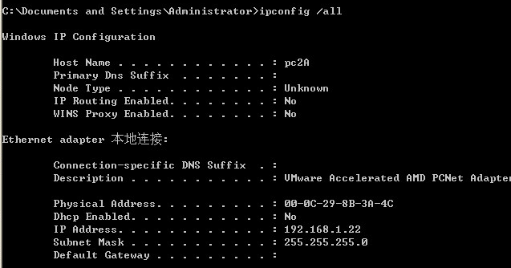
查看PCA的mac地址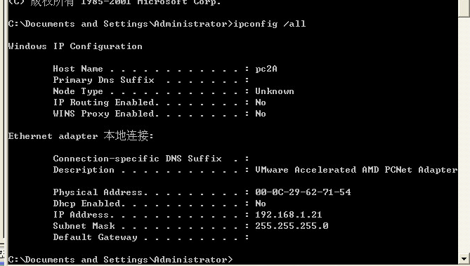
查看PCB的MAC地址。发现MAC地址表中的PCB的mac地址记录比PCA的MAC地址记录晚出现，说明是交换机收到该帧后，提取帧中的源MAC地址（PCA的MAC）和接收端口（GE1/0/1），并在MAC地址表中添加一条记录：000c-298b-3a4c → GE1/0/1。然后收到PCB的ping响应包的mac帧又把PCB对于的MAC地址记录加入到MAC地址表中，所有PCB的MAC地址记录在最上面 - 不能，万一该MAC地址表不是按照时间顺序排列的上述方法不可用，需要换个思路
- 清空MAC地址表
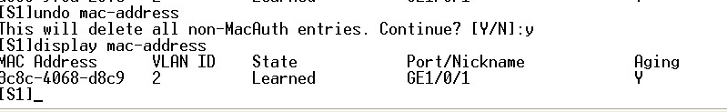
ok没有PCA和PCB的就行了 - 断开PCB与S1的连接
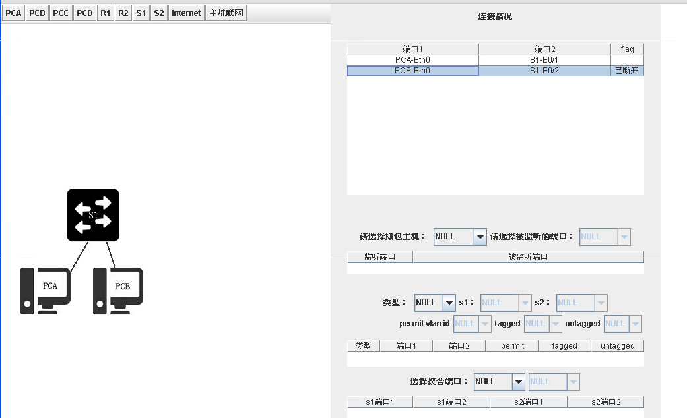
- 然后在PCA中pingPCB
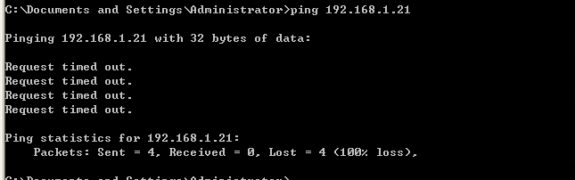
，因为PCB和PCA之间已经没有任何连接了所有ping不通是正常的 - 再次查看MAC地址表发现只有PCA的mac地址记录
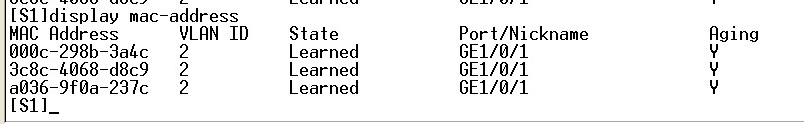
证明是交换机收到帧后，提取帧中的源MAC地址（PCA的MAC）和接收端口（GE1/0/1），并在MAC地址表中添加一条记录：000c-298b-3a4c → GE1/0/1。
- 清空MAC地址表
- 能，刚刚是PCA对PCB发起的ping请求
2.2广播风暴实验&&2.3端口聚合实验¶
为避免给实验设备带来伤害，不实际操作。
实验总结¶
通过在一台交换机上划分 VLAN 和配置 Trunk 端口,并用ping 命令测试在同一 VLAN 和不同VLAN 中设备的连通性,进一步理解IEEE 802.14 协议标准规定的VLAN 技术的基本
3.VLAN的配置与分析¶
实验过程¶
3.1VLAN基本配置¶
实验环境搭建¶
- 组网
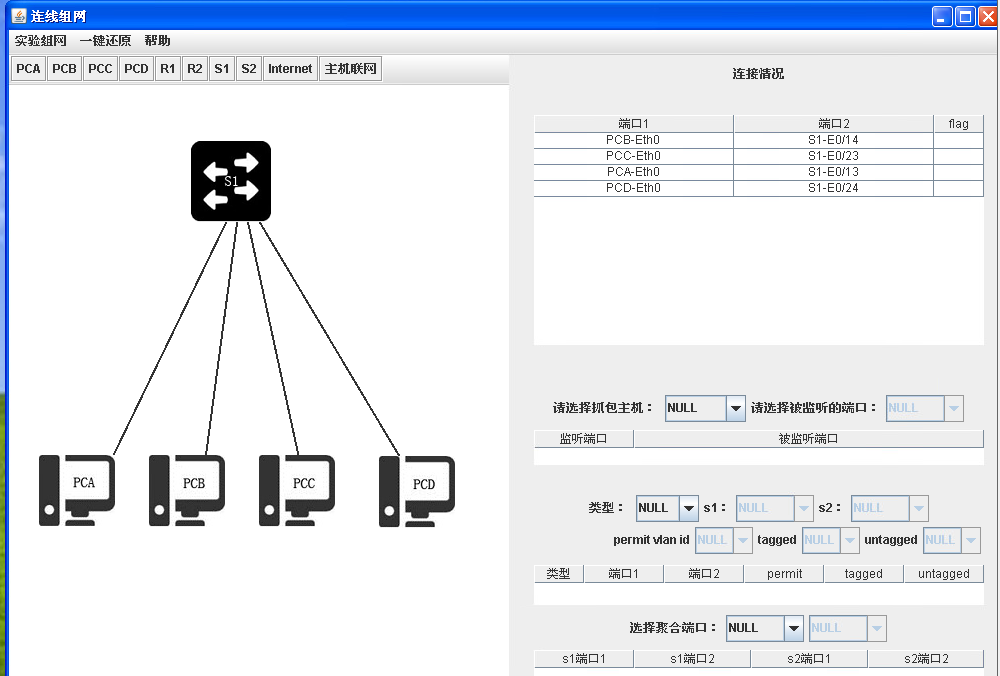
- 配置IP地址
- PCA
- PCB
- PCC
- PCD
- 清空S1的配置
进行实验¶
- 在S1上进行VLAN配置
- 验证同一VLAN中的两台计算机能否通信
- VLAN之间的计算机能否通信
3.2Trunk配置¶
实验环境搭建¶
- 组网
- 清空S1和S2的配置
- 配置IP地址
- 配置好S1和S2并划分VLAN2和VLAN3配置
3.3VLAN tag 标记的分析¶
实验总结¶
通过在一台交换机上划分 VLAN 和配置 Trunk 端口,并用ping 命令测试在同一 VLAN 和 不同VLAN 中设备的连通性,进一步理解IEEE 802.14 协议标准规定的VLAN 技术的基本原理
4.广域网协议分析¶
实验环境搭建¶
实验过程¶
实验总结¶
5.设计型实验¶
实验环境搭建¶
实验内容¶
实验总结¶
问题与思考¶
- 为什么抓到的大部分都是基于Ethernet V2的报文
- 虽然IEEE 802.3是以太网的官方标准，但它主要定义了物理层规范（网线、光纤、速率等）。在数据链路层的帧格式方面，市场选择了Ethernet II，而不是IEEE 802.3的帧格式。目前几乎所有的TCP/IP协议簇（ARP、IP、ICMP、TCP、UDP等）都使用Ethernet II帧格式
- Ethernet II 的优势
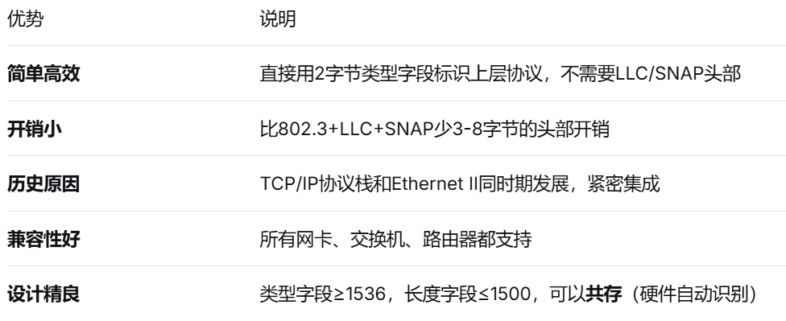
- 什么时候会用到IEEE 802.3
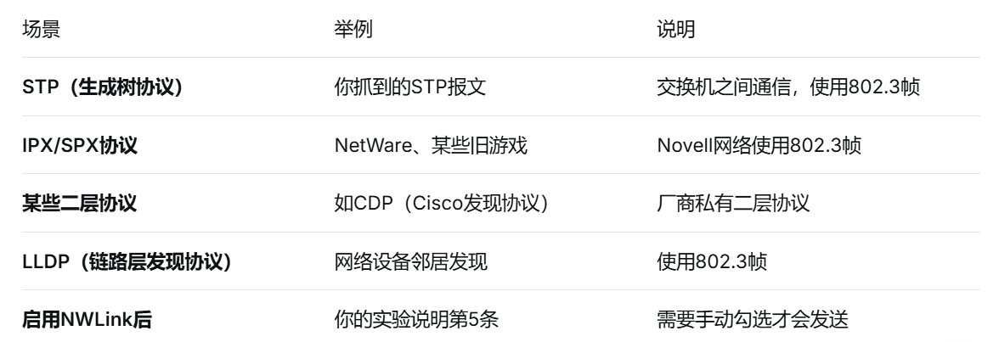
【我分析的是STP报文】 - 为什么TCP/IP协议栈选择Ethernet II？
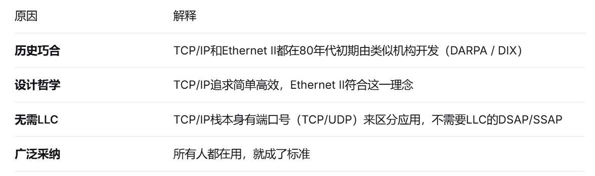
- 实验3.1中交换机在没有配置VLAN时,冲突域和广播域各有哪些端口?配置了VLAN以后呢?
- 实验3.3中步骤1比较,截获的报文有何不同?请结合 VLAN 端口分类和PVID的作用,解释这种 情况下报文转发的过程